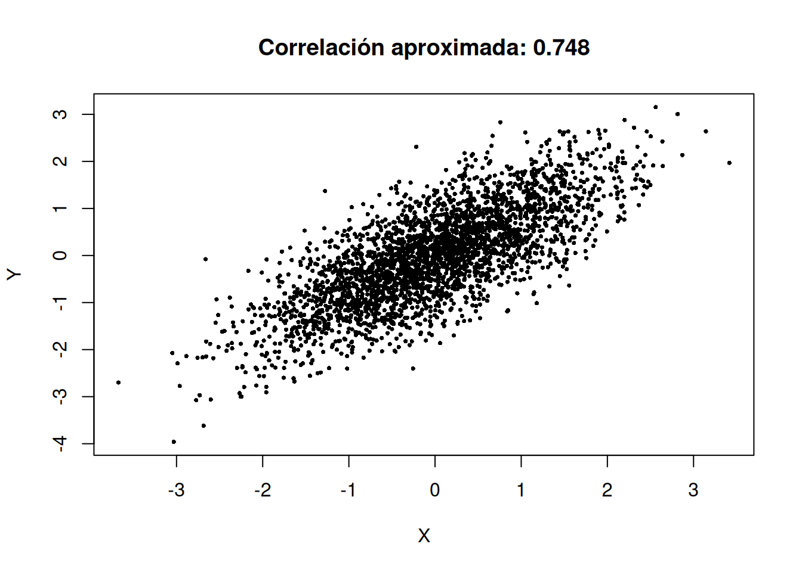

Al finalizar este capítulo, el estudiante será capaz de:
calcular esperanzas de funciones de dos variables aleatorias;
obtener \(E[XY]\) a partir de una distribución conjunta;
definir e interpretar covarianza y correlación;
calcular la varianza de una suma o combinación lineal;
distinguir entre independencia, covarianza cero y correlación cero;
reconocer que correlación mide asociación lineal y no dependencia general;
utilizar R para calcular momentos conjuntos y explorar relaciones lineales y no lineales;
interpretar gráficamente cómo cambia la nube de puntos al variar la correlación.
16.2 De la distribución conjunta a los momentos conjuntos
Una distribución conjunta no sólo permite calcular probabilidades. También permite resumir cómo se comportan simultáneamente \(X\) y \(Y\) mediante cantidades como
\(\operatorname{Cov}(X,Y)>0\): valores altos de \(X\) tienden a asociarse con valores altos de \(Y\).
\(\operatorname{Cov}(X,Y)<0\): valores altos de \(X\) tienden a asociarse con valores bajos de \(Y\).
\(\operatorname{Cov}(X,Y)=0\): no hay asociación lineal detectada por la covarianza, pero puede existir dependencia no lineal.
La magnitud de la covarianza depende de las unidades de medición, por lo que no es adecuada para comparar directamente relaciones expresadas en escalas distintas.
Por tanto, cambiar unidades de metros a centímetros no altera la magnitud de la correlación; sólo invertir el sentido de una escala puede cambiar su signo.
plot(X, Y, pch =16, cex =0.5,main =paste("Correlación aproximada:", round(cor(X,Y), 3)))

31 Interactivo del capítulo
El interactivo tiene dos modos.
Modo lineal. Un deslizador controla \(\rho\) entre \(-0.95\) y \(0.95\). La nube de puntos cambia desde una relación negativa fuerte hasta una positiva fuerte, mostrando simultáneamente covarianza y correlación empíricas.
Modo no lineal. Se muestra el ejemplo \(Y=X^2\) con \(X\) simétrico alrededor de cero. La correlación permanece cercana a cero aunque la dependencia sea visualmente evidente.
El objetivo es evitar una interpretación mecánica de la correlación y reforzar la diferencia entre:
\[
\text{independencia},\qquad
\text{incorrelación},\qquad
\text{dependencia no lineal}.
\]
32 Actividad con GeoGebra
Construye una nube de puntos cercana a una recta y modifica su dispersión vertical mediante un deslizador. Observa cómo la correlación disminuye al aumentar la dispersión.
Después genera puntos de una parábola simétrica
\[
y=x^2
\]
con valores positivos y negativos de \(x\). Discute por qué una medida exclusivamente lineal puede ser cercana a cero aun cuando exista una relación funcional exacta.
33 Estrategia de resolución
Ante un problema de covarianza o correlación:
calcula \(E[X]\) y \(E[Y]\);
calcula \(E[XY]\) a partir de la distribución conjunta;
usa \[
\operatorname{Cov}(X,Y)=E[XY]-E[X]E[Y];
\]
calcula las varianzas marginales;
estandariza para obtener \(\rho\);
interpreta el signo y la magnitud sólo como asociación lineal;
si necesitas la varianza de una suma, incluye los términos de covarianza;
no concluyas independencia únicamente porque \(\rho=0\).
34 Errores frecuentes
Confundir \(E[XY]\) con \(E[X]E[Y]\) sin haber establecido independencia.
Omitir el término \(2\operatorname{Cov}(X,Y)\) en la varianza de una suma.
Interpretar una covarianza grande como una relación necesariamente fuerte sin considerar unidades.
Concluir independencia a partir de correlación cero.
Interpretar correlación como causalidad.
Confundir correlación poblacional \(\rho\) con correlación muestral calculada a partir de datos.
Usar correlación para describir una relación claramente no lineal sin inspeccionar una gráfica.
La independencia implica covarianza cero, pero el recíproco no es cierto en general.
36 Ejercicios
Para la tabla conjunta del capítulo 15, calcula \(E[X]\), \(E[Y]\) y \(E[XY]\).
Obtén la covarianza y la correlación de la misma tabla.
Calcula \(\operatorname{Var}(2X-3Y)\) utilizando las varianzas y la covarianza.
Sean \(\operatorname{Var}(X)=4\), \(\operatorname{Var}(Y)=9\) y \(\operatorname{Cov}(X,Y)=-1.5\). Calcula \(\operatorname{Var}(X+Y)\) y \(\operatorname{Var}(2X-Y)\).
Para la densidad \(f(x,y)=2\) sobre \(0<y<x<1\), verifica que \(E[XY]=1/4\).
Obtén \(\operatorname{Var}(X)\), \(\operatorname{Var}(Y)\) y \(\rho_{X,Y}\) para esa densidad.
Simula 50 000 pares normales con \(\rho=0.8\) y compara la correlación empírica con el valor teórico.
Repite con \(\rho=-0.6\) y \(\rho=0\).
Simula \(X\sim U(-1,1)\) y \(Y=X^2\). Calcula la correlación y describe la gráfica.
Propón un ejemplo real donde una covarianza positiva tenga sentido físico.
Reto ★. Demuestra que \(|\rho_{X,Y}|\le1\) usando la desigualdad de Cauchy–Schwarz.
Reto ★. Demuestra que si \(X\) y \(Y\) son independientes y tienen segundos momentos finitos, entonces \(\operatorname{Cov}(X,Y)=0\).
Comparar asociación lineal, correlación y dependencia no lineal.
Presentación
PDF / PPT
Próximamente
Se incorporará cuando se proporcionen los enlaces.
Video
Video
Próximamente
Explicación audiovisual complementaria.
Infografía
Imagen / PDF
Próximamente
Síntesis visual de covarianza, correlación y varianza de sumas.
36.2 Referencias del capítulo
El tratamiento de esperanza conjunta, covarianza y correlación sigue la presentación estándar de Walpole et al. (2012), Devore (2016), Montgomery y Runger (2018) y Johnson (2018). Los ejemplos, ejercicios, simulaciones y código en R son originales; el enfoque computacional general toma como referencia Kerns (2010).
Devore, Jay L. 2016. Probability and Statistics for Engineering and the Sciences. 9.ª ed. Cengage Learning.
Johnson, Richard A. 2018. Miller & Freund’s Probability and Statistics for Engineers. 9.ª ed. Pearson.
Kerns, G. Jay. 2010. Introduction to Probability and Statistics Using R. 1.ª ed.
Montgomery, Douglas C., y George C. Runger. 2018. Applied Statistics and Probability for Engineers. 7.ª ed. Wiley.
Walpole, Ronald E., Raymond H. Myers, Sharon L. Myers, y Keying Ye. 2012. Probabilidad y estadística para ingeniería y ciencias. 9.ª ed. Pearson.